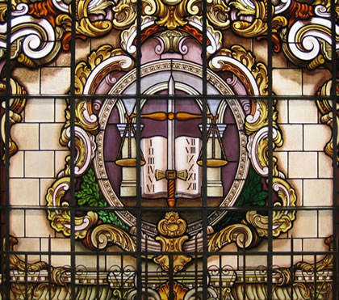

<!-- header.html desenvolvido por: Pedro Henrique Gonçalves Eleutério. -->

<DOCTYPE html>

<html lang = "pt-br">

    <!-- Adicionando título e referenciando arquivo CSS na estrutura head  -->
    <head>
        <title> Header-Projeto_AW1 </title>
        <link href="../css/header.css" rel="stylesheet">
    </head>

    <!-- Abrindo corpo do código -->
    <body>
	
        <!-- Abertura do cabeçalho da página -->
        <header>
		
            <!-- Adicionando imagem e centralizando títulos do cabeçalho da página -->
            <center>  </center>
			
			<!-- Adicionando mensagens -->
            <center> <div> <h1> Seja bem-vindo à página da <abbr title = " Faculdade de Direitor da Universidade São Paulo"> FDUSP! </abbr> </i> </h1> </div> </center>
            <center> <h2> <i> <strong> Somos uma instituição de ensino superior. Nossas atividades englobam ensino, pesquisa e extensão na área do Direito. </strong> </i> </h2> </center>
			
        <!-- Fechando estruturas -->
        </header>
    </body>

</html>